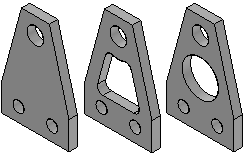
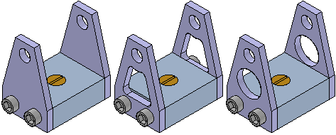

Define Alternate Component command
Defines a list of documents which are related to the selected part or subassembly. Alternate components are typically similar in nature, and can be based on documents that were created independently. Defining a list of alternate components makes it easier to find and select valid components when replacing parts in an assembly.
A simple example of an application for an alternate component group is where there are several versions of a part that have different finishing details. The parts can be independently created or members of a family of parts.

In an assembly where one of the parts is used, you can use the Define Alternate Components command to specify that all three parts are members of the same alternate component group.
A special symbol is used in Assembly PathFinder to indicate that an assembly component is part of an alternate component group.
You can then use the Replace command to replace the part with one of the alternate component members. When you select a part to replace that is a member of an alternate component group, the Alternate Member dialog box is displayed so you can select another alternate component member as the replacement part.

Defining an Alternate Component Group
You can select any part or subassembly in the active assembly to define an alternate component group. When working with a nested assembly, you cannot select individual components that are in a subassembly.
Although an alternate component group would typically contain similar parts, you can define an alternate component group that contains different document types than the original component. For example, you can define an alternate component group that consists of a Part document, a Sheet Metal document, and an Assembly document.
When you select a component in an assembly, then click the Define Alternate Components command, the Define Alternate Components dialog box is displayed so you can browse or search for the documents you want define as alternates for the selected component.
Defining documents as alternate components is a two-step process. First, you browse or search for documents that you want to add to the Alternate Candidates list in the left pane of the Define Alternate Components dialog box. Then you can select documents in the Alternate Candidates list and click the Add button to add them to the Alternates List in the right pane of the dialog box.
If the component you select to define the alternate components group is a member of a family of parts or a family of assemblies, all related members from the same master document are added to the Alternate Candidates list automatically.
The assembly document in which you define the alternate components group stores the group member data.
Using Alternate Component Groups
As described earlier, an alternate components group makes it easier to find and select valid components when replacing parts in an assembly. When you select a component to replace in an assembly, and the component is a member of an alternate components group, the Alternate Member dialog box is displayed so you can select another group member as the replacement part.
When you replace an assembly component with an alternate component that is a different document type than the original component, assembly relationships can fail to recompute properly.
If you want to replace the component with a component that is not an alternate components member, you can click the Browse button to display the Replacement Part dialog box to select another component.
If you create alternate component groups that are used frequently in many assemblies, you should consider creating an assembly that contains only the master alternate component and define the alternate components group in this document. This assembly document then becomes the master document for the alternate components group definition.
To place one of the group members in an assembly later, you can place the assembly document instead. If you also set the Disperse This Assembly During Place Part option on the Assembly tab of the Options dialog box for this assembly, when you place the assembly into another assembly, it will be placed as a part that contains the alternate components group data.
This workflow can be useful when you know a part will be replaced later by another part. For example, you may create a prototype version of a part that you know will later be replaced by a production version of the part that will be created independently in a separate document.
Alternate Components and Alternate Assemblies
You can use an alternate component to replace a component in an alternate assembly that is a family of assemblies, but not an alternate position assembly. For example, you can use the Replace command to replace a part in a family of assembly member with an alternate component, rather than use the Exclude Occurrence functionality on the Family of Assemblies tab. Although this approach can be quicker than using the Exclude Occurrence functionality, when you use Design Manager to copy or move the assembly data set to a new location, any members of the alternate components group that are not used in a family of assembly member will not be included in the data set.
For more information on working with alternate assemblies, see the Alternate Assemblies Help topic.
Comparing Alternate Components and Family of Parts
Alternate Component groups are similar to a family of parts, but provide additional flexibility because you can define an alternate components group using independently created documents and different document types.
How do I
Create a new alternate position assemblyCreate a new family of assemblies
Publish family of assembly members to Teamcenter
Define a list of alternate components for a part
Save an alternate assembly member as a separate assembly
Examples: Dynamically moving a part in an assembly
Learn more
Alternate AssembliesAlternate assemblies impact on Solid Edge functionality
Using Family of Assemblies in the Teamcenter-managed environment
Look up more details
Save to Source commandSave to Member command
Define Alternate Components Dialog Box
Edit Definition command
Alternate Member Dialog Box
Assembly Member dialog box
New Member dialog box (Family of Assemblies tab)
Alternate Assemblies dialog box
Dynamic Configuration dialog box
Family of Assemblies tab
Alternate Assemblies Table dialog box
Save Member dialog box